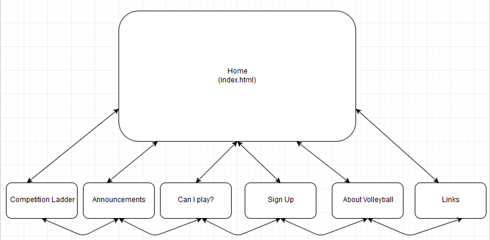

Name: Stephen Koch jc255464
The overall goal for our client, Slammers Beach Volleyball, is to design a website that will increase family and youth participation in both playing volleyball and spectating. Slammers Beach Volleyball is a local business looking to expand it's current user base of approximately 100 weekly patrons by establishing an online presence. In turn our client is looking for a 50% increasing in the client base.
Ultimately, the success of this website will be measured by several factors:
a) The amount of site traffic generated.
b) A healthy percentage of visitor who sign up.
c) Total growth of player base by 50%.
Ideally, the Slammers Beach Volleyball’s main target audience is young families, and high school students. Our client believes that greater brand exposure would increase both under 30’s game participation and competition spectatorship. Additionally, Slammers’ would also like to advertise their social facilities (aka: licensed bar), which should also attract younger people for frequent events.
